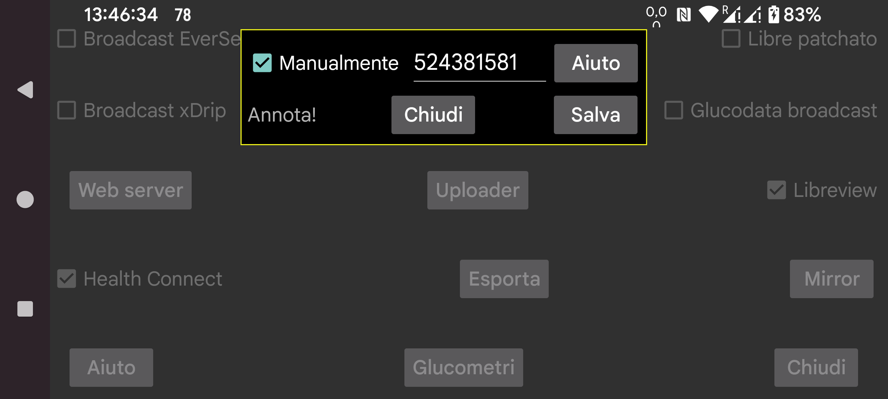

Come ottenere l'account ID Libreview necessario per scansionare un sensore Freestyle Libre 3 tramite NFC? Se specifichi "Manualmente", puoi inserire l'Account ID manualmente. Puoi anche deselezionare "manualmente" e premere su "Da Libreview" per usare l'indirizzo e-mail e la password del tuo account per riceverlo da Libreview.
È anche possibile ricevere l'Account id Libreview da Libreview e successivamente impostare "manualmente" e cambiare l'indirizzo e-mail e la password dell'account Libreview. Quando in seguito imposti "Invia a Libreview" e premi "Reinvia dati", i dati saranno inviati a quell'account Libreview diverso, ma l'account ID precedente/inserito manualmente sarà ancora utilizzato per scansionare il sensore tramite NFC. In questo modo, Juggluco invia dati a un account Libreview diverso da quello usato dall'app Libre 3 di Abbott.